📚 Índice
- 1. Introducción
- 2. Sistemas de nombres planos
- 3. Sistemas de nombres jerárquicos
- 3.1. Protocolo DNS
- 3.2. Espacio de nombres y administración
- 3.3. Consultas y respuestas
- 3.4. Tipos de servidor DNS
- 3.5. Transferencia de zona
- 3.6. Zonas de resolución directa e inversa
- 3.7. Delegaciones, reenvíos y sugerencias de raíz
- 3.8. Tipos de registros DNS
- 3.9. Actualizaciones dinámicas (DDNS) y DNS Seguro (DNSSEC)
- 4. Servidor DNS
- 4.1. Implementación con Microsoft Windows Server
- 4.2. Implementación con Ubuntu Server (BIND 9)
- 5. Cliente DNS (resolver)
- 6. Integración de servidores de nombres planos y jerárquicos
- Resumen
- 📝 Ejercicios propuestos
- 📝 Supuestos prácticos
- Autoevaluación
- Bibliografía
1. Introducción
Cada vez son más los equipos conectados a la red que ofrecen algún tipo de servicio o recurso y, por tanto, también es mayor la necesidad de conocer cómo acceder a ellos. Aunque conocer la dirección lógica del equipo que ofrece el servicio o recurso permite prescindir de conocer el nombre asociado a la misma, cierto es que para los humanos es mucho más sencillo recordar nombres que combinaciones de números.
Ya sea en Internet o en una red privada local, los servicios de resolución de nombres juegan un papel crucial a la hora de acceder a los recursos. A lo largo de este capítulo se describirán los diferentes servicios encargados de llevar a cabo las traducciones de nombres a direcciones IP y viceversa.
2. Sistemas de nombres planos
Mediante el empleo de nombres planos es posible identificar y acceder a equipos que están dentro de una red, pero en ningún caso se conoce la estructura lógica de la misma. Este tipo de sistemas pueden implementarse sobre arquitecturas cliente-servidor o estar distribuidos.
Uno de los sistemas que emplea nombres planos es NetBIOS (Network Basic Input-Output System). Se trata de un sistema que hace de enlace entre la capa de red y las aplicaciones que desean hacer uso de ellas. Permite conocer la dirección lógica (IP) asignada a un dispositivo dentro de una red a partir de un nombre plano y sin necesidad de un servidor que centralice el servicio (se trata de un servicio distribuido).
Una alternativa centralizada es el servidor WINS (Windows Internet Naming Service). Este servicio de resolución y registro de nombres de equipos NetBIOS a direcciones IP está implementado por Microsoft y controla las solicitudes de registro, renovación y liberación que recibe por parte de los clientes, además de responder a las consultas con la dirección IP (siempre y cuando el nombre se encuentre registrado en su base de datos).
💡 Recursos digitales
En los recursos digitales disponibles en la plataforma de Editorial Síntesis, obtendrás información detallada sobre los sistemas de nombres planos NetBIOS y el servicio WINS.
🔍 Investiga
Busca información en Internet sobre cómo realizar la instalación de un servidor WINS sobre un sistema operativo Windows Server y realiza la instalación del servicio. Indaga también sobre cómo configurar los clientes de la red para que se registren en el servicio.
3. Sistemas de nombres jerárquicos
Tal como se ha descrito anteriormente, los sistemas de nombres planos no ofrecen información relativa a la estructura jerárquica de la red en la que se encuentran los dispositivos y, salvo escenarios particulares, están cayendo en desuso. Para conocer este tipo de información es necesario utilizar nombres articulados o jerárquicos cuya sintaxis se describirá en este capítulo.
El uso de esos sistemas no se limita a la simple traducción de nombres a direcciones lógicas y viceversa; también permite conocer la ubicación y forma de acceso a determinados servicios dentro de un dominio, entendiéndose el término «dominio» como el conjunto de recursos que comparten parte de su identificador y que son controlados por la misma entidad.
3.1. Protocolo DNS
El protocolo DNS (Domain Name System o sistema de nombres de dominio) apareció en 1984 para dar respuesta a las necesidades que empezaban a hacerse palpables ante el emergente Internet. El servicio encargado de implementar el protocolo hereda su nombre de este.
DNS generalmente trabaja sobre UDP, aunque también soporta conexiones TCP cuando el tamaño de los datos de la respuesta sobrepasa los 512 bytes, tal como sucede cuando se realizan transferencias de zona.
💡 Recuerda
El servicio DNS es un requisito indispensable para los servicios de dominio de Active Directory.
A) Características y funcionamiento
Un servidor DNS permanece en continua escucha ante posibles peticiones de los clientes que deba atender. Los clientes, por su parte, implementarán en sus sistemas operativos el DNS resolver, que es el servicio encargado de realizar las consultas a los servidores DNS correspondientes, interpretar las respuestas recibidas y devolver el resultado al programa que desencadenó la consulta.
Además del servicio DNS, existen otras alternativas que residen en cada cliente y permiten conocer esta información sin la necesidad de realizar una consulta contra un servidor DNS. Se trata de:
- Caché DNS: Puede consultarse mediante el comando
ipconfig -displaydnsen sistemas Microsoft Windows y para vaciar su contenido puede hacerse uso del comandoipconfig -flushdns. Sin embargo, no todos los sistemas Linux hacen uso de caché DNS de forma predeterminada. En caso de haberse instalado el demonioncsdsobre un sistema operativo Linux (Debian, Ubuntu o derivados), el contenido de dicha caché residirá en el fichero binario/var/cache/nscd/hosts. - Fichero Hosts: Fichero de texto plano que reside en todos los equipos de la red y que permite hacer traducciones de nombres a direcciones IP. Puede encontrarse en los path
C:\Windows\System32\drivers\etc\hostspara sistemas Microsoft Windows y/etc/hostspara sistemas Linux. Cada entrada debe mantenerse en una línea individual, introduciéndose en primer lugar la dirección IP y a continuación, separado por al menos un espacio, el nombre de host correspondiente. Es necesario disponer de privilegios de administrador para poder modificar su contenido.
Debido al elevado número de nombres para traducir y a la constante aparición de nuevos dominios, no es posible realizar la gestión de todos los nombres de dominio de una forma centralizada desde un único servidor DNS. Es por ello por lo que DNS se diseñó para trabajar de forma jerárquica y distribuida, y cada servidor es responsable únicamente de pequeñas parcelas de nombres conocidas como zonas. Es posible, por tanto, definir el concepto «zona» como una base de datos completa para un subárbol podado del espacio de dominios.
El protocolo DNS emplea nombres articulados jerárquicos que permiten realizar la traducción de los mismos a direcciones IP y viceversa, conocer servicios de red asociados a cada nombre y conocer la estructura jerárquica del dominio en el cual se encuentra ubicado el dispositivo.
El servicio DNS se implanta comúnmente en redes locales de ámbito corporativo con la finalidad de servir de elemento traductor a los clientes que necesitan acceder a un determinado dispositivo, y es menos relevante para la mayoría de los entornos domésticos.
3.2. Espacio de nombres y administración
DNS se organiza conforme a un sistema jerárquico en forma de árbol invertido, en el que el elemento raíz del árbol se corresponde con el dominio raíz; por este motivo, todo nombre de dominio debería finalizar con el carácter punto «.» que representa dicho dominio raíz.
El dominio raíz es gestionado por el ICANN y está disponible en trece servidores, aunque en realidad
existen centenares de réplicas de los mismos ubicadas en todo el mundo. Esta redundancia ofrece una
alta disponibilidad. Los servidores raíz se identifican por letras de la A a la M y sus nombres son
a.root-servers.net., b.root-servers.net.,… m.root-servers.net..
Dado que todos los nombres de dominio no podrían alojarse bajo el dominio raíz directamente, estos se distribuyen en dominios de nivel inferior. Así pues, por debajo de los dominios raíz se encuentran los dominios TLD (Top Level Domain), que se conocen como «dominios de primer nivel». La responsabilidad de gestión de la mayoría de los dominios TLD ha sido delegada por el ICANN sobre organizaciones específicas. Los registros de TLD determinan la selección de caracteres que estará disponible bajo esos dominios. Hay varios tipos de TLD:
- De infraestructura: Son dominios empleados para obtener el nombre completo (FQDN) de una dirección IP (dominio
.arpa). - Genéricos (gTLD): Son dominios utilizados por un tipo concreto de organización que no pertenece a ningún país y están compuestos, como mínimo, de tres caracteres. Dentro de estos dominios existe una nueva clasificación:
- Restringidos: Para poder utilizarlos se debe cumplir una serie de requisitos. Un ejemplo es el dominio
.pro, que únicamente pueden utilizar profesionales acreditados, o.name, utilizado para dominios personales. - No restringidos: Utilizados para cualquier finalidad. Ejemplos:
.com(uso comercial),.info(uso informativo),.net(previsto inicialmente para organizaciones relacionadas con tecnologías de redes; hoy en día es de propósito general),.org(uso para organizaciones)… - Patrocinados: Empleados para un fin concreto. Ejemplos:
.edu(educación),.gov(Gobierno de Estados Unidos),.mil(ejército de Estados Unidos)… - Comerciales: Son de uso libre y no existen restricciones para su uso. Ejemplos:
.eus(Euskadi),.gal(Galicia),.madrid(Comunidad de Madrid)…
- Restringidos: Para poder utilizarlos se debe cumplir una serie de requisitos. Un ejemplo es el dominio
- Geográficos (cTLD): Son dominios utilizados por países o territorios. Se componen de dos caracteres. Ejemplos:
.es(España),.pt(Portugal),.ad(Andorra)…
Dado que el arrendamiento de nombres de dominio se realiza durante un periodo determinado de tiempo, algunos agentes especuladores se dedicaron a rastrear dominios de cierto prestigio para, en caso de no haberse renovado, solicitar su arrendamiento y privar de su uso temporalmente a la organización que originariamente lo registró. Posteriormente pedían un rescate por su cesión.
Un servidor DNS maneja nombres articulados conocidos como Full Qualified Domain Name
(FQDN). Cada FQDN consta de nombre del host y nombre del dominio internacionalizado en el
que se encuentra dicho host. Ejemplos de FQDN son www.google.es, www.google.com,
www.sintesis.com o www.gnu.org, entre otros.
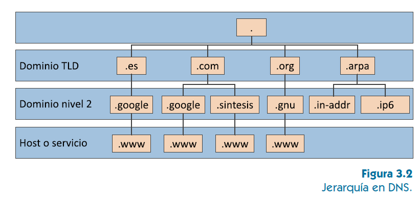
Referente a cada nombre de dominio internacionalizado se cumple que:
- Lo forman un conjunto de hasta 127 etiquetas separadas por el carácter punto «.», donde cada etiqueta representa un nodo (dominio) y tiene una longitud máxima de 63 caracteres.
- Su longitud total es de 255 caracteres.
- Originalmente se utilizaba el subconjunto LDH (letra, dígito, guion), que es un subconjunto de caracteres ASCII formado por las letras a-z, los dígitos 0-9 y el guion «-», aunque hoy en día se utilizan nombres de dominio internacionalizado (IDN, por sus siglas en inglés).
- No se hace distinción entre mayúsculas y minúsculas.
El proceso mediante el que un cliente (particular o empresa) alquila un dominio para su uso a la empresa u organismo autorizado para tal efecto se denomina registro de dominio. El registro de dominio no puede realizarse sobre los servidores raíz, sino que debe hacerse contra un servidor TLD o de niveles inferiores.
📝 Actividad propuesta 3.1
Consulta el listado completo de dominios ccTLD en la norma ISO-3166 e indica los países a los que pertenecen los dominios .cu, .de, .fr, .pe y .ru.
🔍 Investiga
Uno de los dominios de nivel superior geográfico (ccTLD) es el dominio .tk. Busca información acerca de este dominio y su relación con el cibercrimen. ¿Qué empresa se ocupa de gestionar el dominio de nivel superior geográfico .es?
3.3. Consultas y respuestas
Las consultas formuladas por los DNS resolver (cliente) y las respuestas emitidas por los servicios DNS se realizan sobre el protocolo de transporte UDP. Las consultas pueden preguntar por una dirección correspondiente a un equipo con un nombre determinado, por un nombre asociado a una dirección concreta, por servicios para un determinado nombre del dominio…
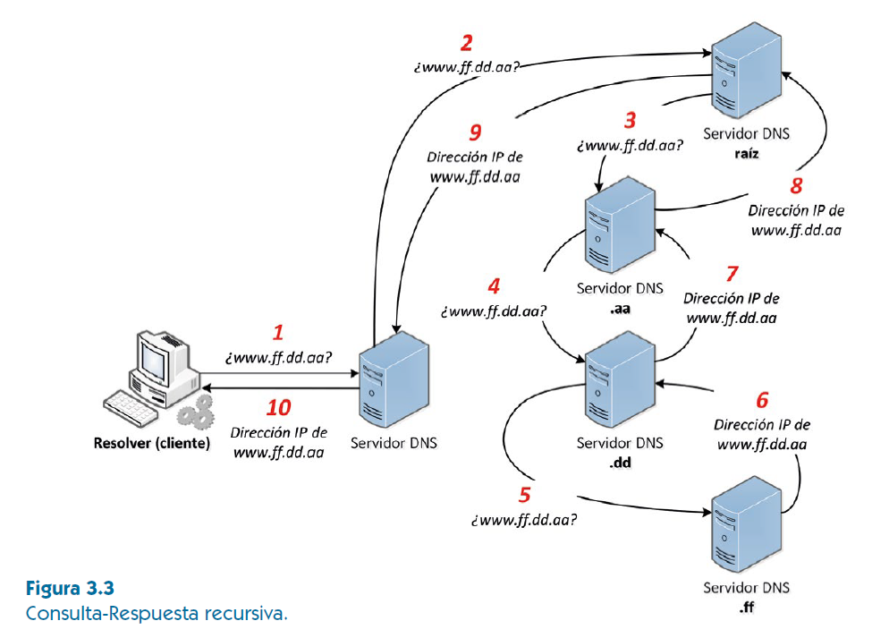
Estas consultas pueden ser de tipo:
- Recursiva: En ellas se solicita al servidor DNS que conteste directamente con el resultado o con un error (en caso de no existir respuesta).
- Si la respuesta del servidor se construye con base en la información contenida dentro de las zonas que él mismo gestiona y que, por tanto, conoce de primera mano, se tratará de una respuesta autoritativa.
- En caso contrario, y suponiendo que el servidor no se haya configurado para rechazar consultas recursivas, el servidor actuará como un intermediario y la respuesta se construirá según la información contenida en su caché tras haberse consultado al servidor que tiene la autoridad para responder sobre la misma. En este caso será una respuesta no autoritativa.
- Iterativa: En ellas se solicita al servidor que conteste con el resultado si lo conoce, con un error en caso de que el recurso solicitado no exista en las zonas que gestiona directamente o con un referral. Este modo deben soportarlo todos los servidores DNS.
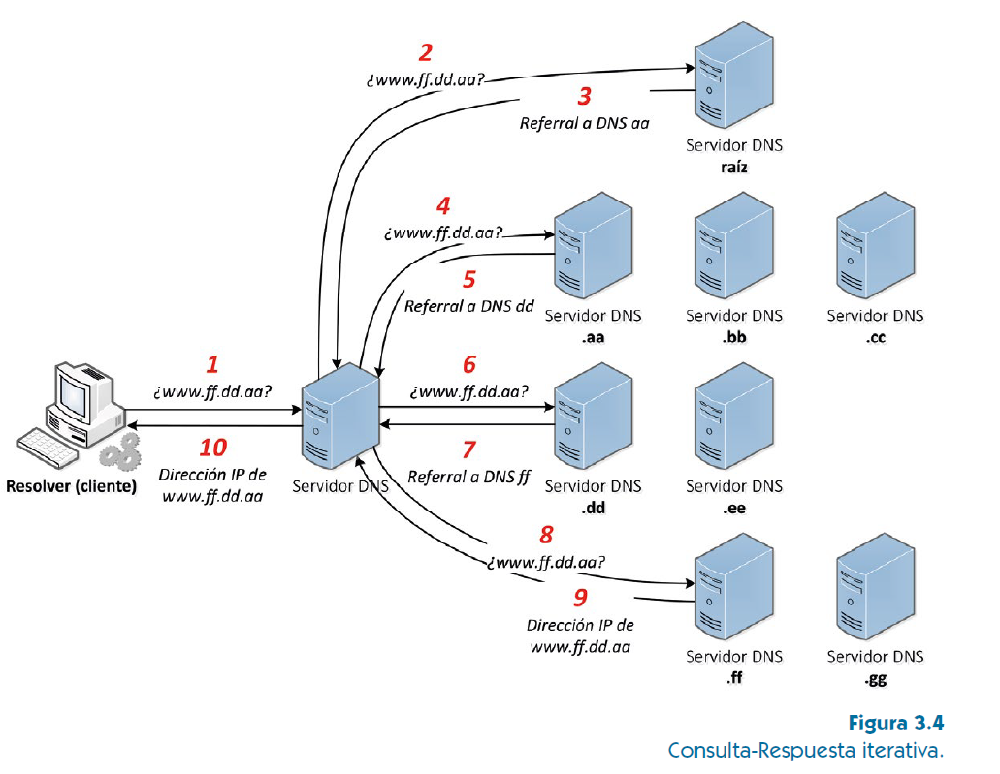
3.4. Tipos de servidor
Dada la posibilidad de que un servidor DNS pueda estar inoperativo durante un periodo determinado, es conveniente que exista más de un servidor DNS que contenga una réplica de la información de las zonas. De esta manera es posible ofrecer tolerancia ante posibles caídas de alguno de los servidores, así como balanceo de carga entre ellos en condiciones de funcionamiento normales.
Sea cual sea la razón que justifique la existencia de más de un servidor DNS, es importante distinguir entre los diferentes roles que estos pueden jugar, los cuales dependerán del origen de la información manejada.
- Servidor primario o maestro: Los registros contenidos en la zona que maneja se gestionan directamente en él.
- Servidor secundario o esclavo: Los registros contenidos en la zona que maneja se obtienen a través de una sincronización con el servidor primario para dicha zona (el cual los gestiona directamente).
- Servidor caché: Si la información que este conoce lo es por haber tenido que preguntar previamente a otro servidor para resolver una consulta que desconocía y tras ese paso la almacenó en su caché durante un tiempo determinado.
💡 Para saber más
- Un servidor primario/maestro no tiene que ser obligatoriamente el servidor DNS principal que se configura en un cliente y, de igual manera, un servidor secundario/esclavo no tiene que ser obligatoriamente configurado como el servidor alternativo de un cliente.
- Todo servidor DNS tiene su propia configuración DNS y su propio resolver para que las aplicaciones que sobre él se ejecutan en modo cliente sean capaces de conocer las traducciones correspondientes, bien porque la configuración DNS lo establece a él mismo como servidor principal (claro ejemplo de un controlador de dominio), bien por establecer a otro diferente.
📝 Actividades propuestas 3.2 y 3.3
3.2. ¿Puede un servidor ser primario y secundario al mismo tiempo? Justifica tu respuesta.
3.3. ¿Puede un servidor ser primario y caché al mismo tiempo? Justifica tu respuesta.
3.5. Transferencia de zona
Como ya se ha mencionado anteriormente, DNS es un servicio que trabaja de forma distribuida y que permite que sean varios los servidores que ofrecen la misma información con la intención de proporcionar balanceo de carga y tolerancia ante posibles fallos. Pero, para que esto pueda realizarse satisfactoriamente, es necesario que los servidores encargados de ofrecer la información de una zona estén correctamente sincronizados entre sí. El proceso mediante el cual los servidores de una zona sincronizan la información de esta se denomina transferencia de zona. Este proceso se lleva a cabo mediante el establecimiento de una conexión TCP desde el servidor secundario/esclavo, que actúa como un cliente, y el servidor primario/maestro. Las transferencias de zona se realizarán con la periodicidad declarada en el campo Intervalo de actualización del registro SOA, aunque se puede configurar el servicio para que el servidor primario notifique cada cambio producido en la zona haciendo uso de los mensajes NOTIFY.
Las transferencias de zona pueden ser completas (consultas AXFR) o incrementales (consultas IXFR), siendo estas más seguras y ligeras al transferirse únicamente los cambios producidos desde la última versión de la zona cargada.
3.6. Zonas de resolución directa e inversa
Una zona de resolución directa permite la traducción de nombres DNS en direcciones IP, así como obtener información sobre los servicios de red disponibles.
De la misma manera que los servidores DNS ofrecen la posibilidad de realizar resoluciones en las que
se realiza la traducción de nombre a dirección IP, también se ofrece la posibilidad de realizar
resoluciones inversas en las que se traduce de dirección IP a nombre. Para que este tipo de
resoluciones pueda llevarse a cabo, es necesario que se creen zonas de resolución inversa adicionales
a las ya creadas. Para IPv4 se utiliza el dominio in-addr.arpa y para IPv6 se utiliza el
dominio ip6.arpa.
En una búsqueda inversa IPv4, cada dirección se representa como la secuencia de números decimales
correspondiente a la dirección IP en orden inverso y separados por caracteres punto (.), más el
sufijo .in-addr.arpa. Por ejemplo, la dirección IPv4 13.95.0.245 se
corresponderá con el registro PTR 245.0.95.13.in-addr.arpa.
En una búsqueda inversa IPv6, cada dirección se representa como la secuencia de números que
representa la dirección IP en orden inverso y separados por caracteres punto (.), más el sufijo
.ip6.arpa. Por ejemplo, la dirección IPv6 2001:0db8:3c4d:0015:0000:0000:1a2f:1a2b
se corresponderá con el registro PTR b.2.a.1.f.2.a.1.0.0.0.0.0.0.0.5.1.0.0.d.4.c.3.8.b.d.0.1.0.0.2.ip6.arpa.
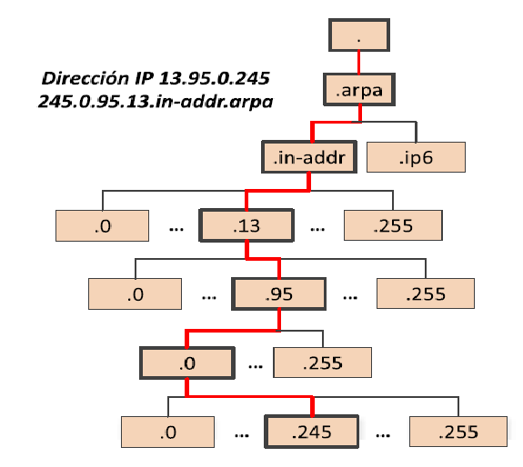
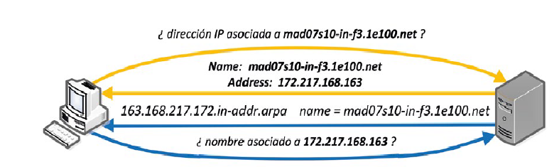
💡 Toma nota
Los correos electrónicos que llegan a un servidor de correo entrante desde un servidor con un nombre de dominio que no tiene asociado un registro PTR (para resolución inversa) se asocian con SPAM y, por tanto, se rechazan.
3.7. Delegaciones, reenvíos y sugerencias de raíz DNS
A tenor de lo descrito en el apartado «B. Espacio de nombres y administración», todo el espacio de nombres se distribuye en diferentes niveles y diferentes zonas dentro de cada nivel. Así, cuando un servidor DNS recibe una consulta, intenta resolverla utilizando la información existente en sus zonas primarias, sus zonas secundarias y su caché (siempre en este orden). Si la respuesta puede darse basándose en la información contenida en sus zonas (primarias o secundarias), esta será una respuesta autoritativa; si la información reside en su caché, será no autoritativa.
Sin embargo, es posible que la consulta sea sobre un recurso desconocido que no se encuentra en sus zonas ni en su caché:
- En el caso de que el recurso esté contenido en alguna zona de nivel inferior a la zona gestionada directamente por el servidor, se deberá delegar la responsabilidad de responder sobre el servidor DNS autorizado para dicha zona (estas delegaciones se irán produciendo en orden descendente y siempre son configuraciones que se llevan a cabo sobre la zona padre, no sobre el servidor).
- En el caso de que el recurso esté totalmente fuera de la zona gestionada de forma directa, y por ende también de cualquier zona de nivel inferior, deberá ser otro servidor el encargado de hacer la resolución. Es en estos casos en los que entran en juego reenvíos y las sugerencias de raíz DNS:
- Si se han declarado reenviadores, será a estos a quienes se les envíe una consulta recursiva quedando a la espera de respuesta. Estos pueden ser:
- Absolutos: Si las consultas se reenvían directamente sin tener en cuenta el sufijo DNS del nombre de dominio buscado.
- Condicionales: Si las consultas se reenvían a un servidor concreto basándose en el sufijo DNS del nombre de dominio buscado.
- Si no se han declarado reenviadores o si no se ha podido contactar con ellos en un periodo de tiempo determinado, se enviará una consulta iterativa a uno de los servidores DNS especificados en las sugerencias de raíz DNS. Generalmente, los servidores DNS vienen preinstalados con el método automático de consulta sugerencias de raíz DNS, aunque si se declaran reenviadores, estos tendrán prioridad sobre las sugerencias de raíz.
- Si se han declarado reenviadores, será a estos a quienes se les envíe una consulta recursiva quedando a la espera de respuesta. Estos pueden ser:
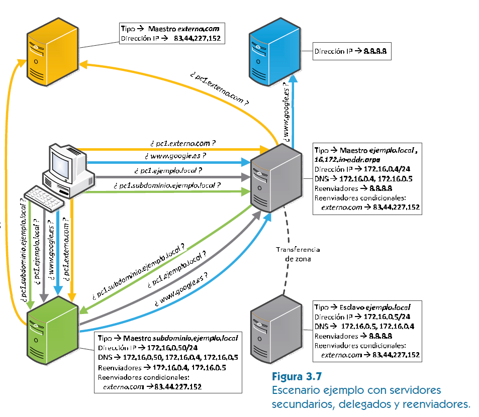
📝 Actividades propuestas 3.4 y 3.5
3.4. ¿En qué escenario puede ser interesante el establecimiento de un reenviador absoluto?
3.5. ¿En qué momento se hace uso de las sugerencias de raíz al realizarse una consulta DNS?
3.8. Tipos de registros DNS
Dentro de las zonas de resolución directa o inversa se pueden encontrar diferentes registros destinados a contener la información que el servidor deberá resolver. Cada registro tiene una serie de campos en los que se almacena su información y que son los siguientes:
| Campo | Descripción |
|---|---|
| Nombre de dominio | Contiene el nombre del dispositivo en el cual se encuentra el recurso que se está describiendo. |
| TTL (Time To Live) | Indica el tiempo que puede permanecer dicho registro almacenado en la caché de un servidor DNS. Puede indicarse en segundos, minutos, horas, días o semanas, o incluso no indicarse, en cuyo caso se tomará del valor general de la zona. |
| Clase | Hace referencia a la familia de protocolos que se empleará (generalmente, clase IN). |
| Tipo | Es el tipo de registro (ver cuadro 3.2). |
| Datos | Contiene la información que registrar y depende totalmente del tipo de registro. Puede ser una dirección IP, un nombre... |
💡 Sabías que…
El campo clase también puede tomar los valores HS y CH:
- HS se corresponde a Hesiod, protocolo histórico del MIT empleado para compartir información sobre diversas bases de datos de sistemas, como usuarios, grupos, impresoras, etc.
- CH se corresponde con Chaosnet, otro protocolo LAN creado en el MIT a mediados de la década de 1970, que raramente fue utilizado para su propósito histórico, pero que ha sido utilizado para zonas de información del servidor integradas de BIND.
Los diferentes tipos de registro que pueden darse de alta en una zona son los mostrados en el siguiente cuadro:
| Tipo de registro | Descripción |
|---|---|
| SOA (Start of Authority) | Se trata del registro de inicio de autoridad y, por tanto, el más importante. Especifica quién es el servidor DNS maestro (o primario), por lo que implica la existencia de un registro NS asociado (pero no a la inversa). Además de los campos anteriormente descritos, añade:
|
| NS (Name Server) | Este registro se utiliza para indicar que uno de los registros declarados existentes (A, AAAA o CNAME) se corresponde con el de un servidor de nombres con autoridad para resolver consultas de un dominio. |
| A (Address) | Se trata de un registro que contiene la correspondencia entre un nombre y su dirección IPv4 de 32 bits. |
| AAAA | Similar al registro A, pero la dirección correspondiente al nombre es una dirección IPv6 de 128 bits. |
| CNAME (Canonical Name) | Coloquialmente conocido como «alias», es un registro que contiene la correspondencia de un nombre alternativo a un registro ya existente (A o AAAA). Los subdominios y registros DNS se obtienen del dominio original. |
| MX (Mail Exchange) | Registro empleado para indicar los servidores de correo electrónico de la zona. Dado que es posible que existan varios servidores de correo, también será necesario indicar la prioridad de uso de los mismos. Para ello se hace uso del campo Preference (a menor valor en este campo, mayor prioridad). |
| SRV (Service) | Ofrece información acerca de otros servicios diferentes al de correo electrónico o de resolución de nombres disponibles en la zona. Al igual que los registros MX y NS, implica la existencia del registro A o AAAA. Los registros SRV disponen del campo Priority, que indica la preferencia de uso de los servidores (se usa de forma similar al campo Preference de los registros MX). Además, dispone de otros dos campos más que son:
|
| PTR (Pointer) | Se trata del registro empleado, exclusivamente, en zonas de resolución inversa y que, por tanto, hace justo lo contrario al registro A o AAAA, traduciendo direcciones IP a nombres de dominio. |
| TXT (Text) | Registro de texto que permite al administrador insertar texto arbitrariamente en un registro DNS. Este tipo de registro es muy utilizado por los servidores de listas negras DNSBL (DNS-based Blackhole List) para la filtración de SPAM o para las VPN en donde se puede definir una llave que utilizarán los clientes. |
Nota: Los navegadores web, así como otros tipos de aplicación, no están diseñados para hacer uso de los registros SRV.
📝 Actividades propuestas 3.6 a 3.10
3.6. ¿Qué diferencia el campo «intervalo de actualización» del campo «intervalo de reintento»?
3.7. ¿Qué tipo de registro se encuentra únicamente en las zonas de resolución inversa?
3.8. Si un registro MX dispone de un valor en Preference de 10 y otro registro similar dispone de un valor en Preference de 20, ¿cuál de los dos registros MX tendrá menor prioridad?
3.9. ¿Qué campo se utiliza para diferenciar la versión de la zona?
3.10. Indica el nombre de tres tipos de registros que requieran de la existencia de registros A o AAAA.
3.9. Actualizaciones dinámicas (DDNS) y DNS Seguro (DNSSEC)
Actualizaciones dinámicas (DDNS)
Hasta llegar a este punto, se ha considerado que cada servicio siempre se aloja sobre un equipo que tiene una dirección IP inalterable a lo largo del tiempo y que esta se encuentra vinculada directamente con un nombre de dominio. Aunque esto puede ser así por norma general, existen situaciones en las que los servidores tienen direcciones dinámicas o en las que es deseable mantener actualizada la correspondencia entre un nombre de dominio y una IP. Gracias a una variable de DNS denominada DDNS, es posible actualizar automáticamente la información relativa a un nombre de dominio en un DNS, de manera que siempre será posible obtener la dirección IP asociada a dicho nombre independientemente de que esta varíe.
Un escenario ejemplo puede ser el de un dominio en el que los clientes, que tienen un nombre de
dominio, obtienen sus direcciones IP desde un servidor DHCP de la organización. La actualización de
la información en el DNS podrá realizarse de forma manual desde cada cliente (por ejemplo, con el
comando ipconfig /registerdns en Windows o con la herramienta nsupdate en
LINUX), pero es mucho más práctico automatizarla desde el propio servidor DHCP. El protocolo de
actualización de DNS desde el servidor DHCP se recoge en la RFC 2136.
Otro escenario en el que se puede hacer uso de DDNS es aquel en el que se pretende instalar un servidor en un entorno doméstico para ofrecer servicio a Internet. En estos entornos, los servidores se encuentran tras un router cuya dirección IP pública es dinámica, salvo que se contrate lo contrario con el ISP. Esta situación dificulta enormemente el acceso al servicio, el cual debe realizarse a través de la IP que irá variando o a través de un nombre que deberá estar actualizado en todo momento.
🔍 Investiga
Busca en Internet tres lugares que ofrezcan DDNS gratuito.
DNS Seguro (DNSSEC)
El servicio DNSSEC añade una capa extra de seguridad a los servidores DNS de un dominio con la finalidad de evitar que un atacante pueda falsificar datos DNS mediante un envenenamiento de caché DNS. Los datos que obtendrá un cliente mediante este servicio serán auténticos e íntegros. Para ello se utiliza un mecanismo de cifrado asimétrico de clave pública.
Para poder hacer uso de este servicio, es preciso que los servidores DNS autoritativos dispongan de la versión firmada del dominio. Es importante destacar que no todos los servidores DNS soportan DNSSEC.
4. Servidor DNS
Tal como se ha descrito en apartados previos, el servidor DNS podrá desempeñar varios roles dependiendo del origen de la información manejada, así como de su tipo. El escenario de ejemplo que se va a emplear a lo largo de este apartado es el siguiente:
| Configuración del servidor |
Interfaces del red del servidor | Primera interfaz | 172.16.0.4/24 |
|---|---|---|---|
| Segunda interfaz | 172.16.0.5/24 |
||
| Configuración del servicio DNS |
Dominio | ejemplo.local |
|
| Servidor primario | ns1.ejemplo.local (172.16.0.4) |
||
| Servidor secundario | ns2.ejemplo.local (172.16.0.5) |
||
| Zona de resolución directa | ejemplo.local |
||
| Zona de resolución inversa | 16.172.in-addr.arpa |
||
| Registros A | ns1 → 172.16.0.4, ns2 → 172.16.0.5, mailserver1 → 172.16.0.6, mailserver2 → 172.16.0.7, www → 172.16.0.8, ftp → 172.16.0.9, pc1 → 172.16.0.66 |
||
| Registros CNAME | recepción → pc1.ejemplo.local |
||
| Registros MX | mailserver1 (prioridad 10), mailserver2 (prioridad 10) |
||
| Registro SRV | _telnet._tcp → pc1.ejemplo.local (puerto 23) |
||
| Reenviador | 8.8.8.8 |
||
Cuadro 3.1. Configuración del servidor y del servicio DNS.
4.1. Implementación con Microsoft Windows Server
Instalación del servicio desde PowerShell (con privilegios de administrador):
Install-WindowsFeature DNS -IncludeManagementToolsTambién se puede realizar la instalación desde «Administrador del servidor», «Agregar roles y características».
a) Configuraciones generales en servidor maestro/esclavo
Como requisito previo se debe configurar la interfaz de red del servidor, indicando que su «Servidor DNS preferido» será él mismo. En caso de que se vaya a instalar un servidor secundario, se establecerá en el campo «Servidor DNS alternativo» la dirección del otro servidor.
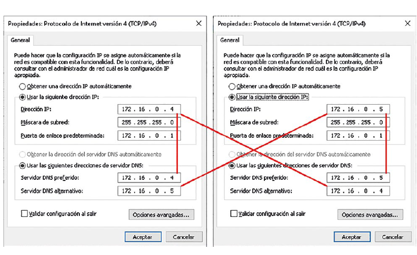
Para configurar el servicio, se debe acceder a la herramienta de administración de DNS
(dnsmgmt.msc) dentro de la categoría «Herramientas administrativas de Windows» del menú
«Inicio».
En primer lugar, se deben realizar las configuraciones a nivel de servidor para indicar las interfaces a través de las cuales se ofrecerá el servicio o habilitar/deshabilitar el modo de trabajo recursivo, entre otras. Para ello, se debe hacer clic derecho en el servidor y seleccionar la opción «Propiedades» del menú contextual e ir accediendo a las pestañas «Interfaces» y «Opciones avanzadas».
b) Configuración específica para servidor maestro
Desde el menú emergente que aparece al hacer clic derecho en el servidor, se debe seleccionar la
opción «Zona nueva». El asistente irá guiando el proceso de creación de la zona y preguntando por el
tipo (seleccionar «Zona principal» y «Zona de búsqueda directa»), nombre de zona
(ejemplo.local), nombre del archivo (ejemplo.local.dns) y cómo se realizarán
las actualizaciones de zona (marcar «No admitir actualizaciones dinámicas»).
Repitiendo el mismo paso, pero seleccionando «Zona de búsqueda inversa», se procederá a crear la zona
que traducirá de IP a nombres (172.16) sobre el fichero 16.172.in-addr.arpa.dns.
Es muy conveniente crearla antes de configurar la zona de resolución directa, pues el asistente
permite automatizar la inserción de los registros PTR asociados a los registros A/AAAA que se van
introduciendo.
Una vez creadas las zonas, es el momento de introducir los registros correspondientes. Haciendo clic derecho sobre la zona creada, aparecerá el menú contextual de acciones que realizar sobre la zona. Se seleccionará:
- «Host nuevo (A o AAAA)…» para registros de resolución directa. Para cada registro NS, CNAME, MX o SRV, debe existir un registro A o AAAA asociado.
- «Alias nuevo (CNAME)…» para registros alias.
- «Nuevo intercambio de correo (MX)…» para servicios de correo.
- «Registros nuevos…» para acceder al submenú que permite seleccionar «Registro de servicio (SRV)».
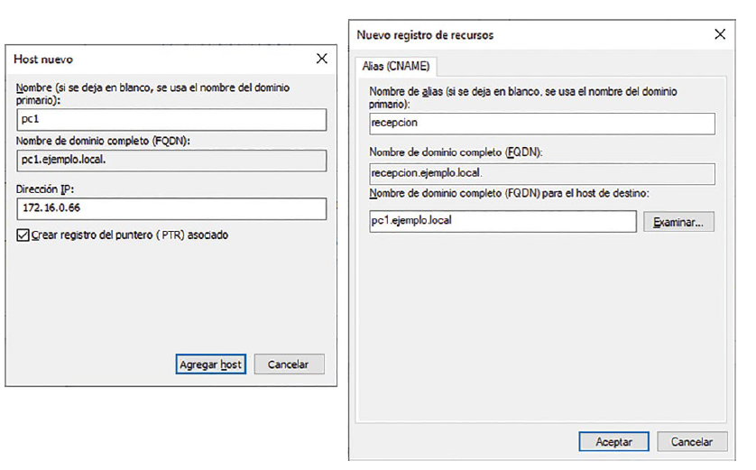
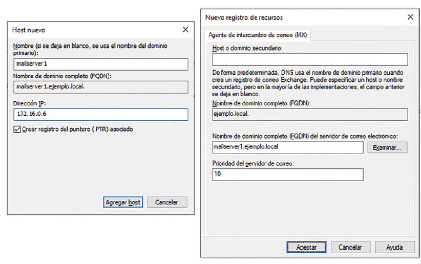
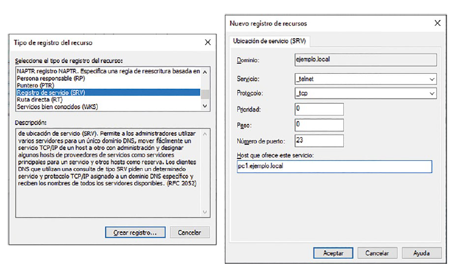
Para llevar a cabo las configuraciones de la zona, ya sea de resolución directa o inversa, es preciso acceder a la pestaña «Inicio de autoridad (SOA)» en las propiedades de la zona a las que se podrá acceder haciendo clic derecho sobre la zona.
💡 Toma nota
Si se tiene en cuenta que las delegaciones solo se pueden hacer una vez, ante escenarios en los que los equipos están en subredes, la zona de resolución inversa puede estar cubriendo más que el rango asignado a los equipos de dicha zona e impedir de esta manera la resolución para otras subredes. La solución más fácil es forzar a que sea una única zona la que se ocupe de las resoluciones inversas de toda la red, la cual incluye todas las subredes.
c) Configuración específica para servidor esclavo
Antes de proceder con las configuraciones sobre el servidor esclavo, será preciso hacer ciertas configuraciones extra en el servidor maestro:
- En primer lugar se deben dar de alta los dos registros A o AAAA correspondientes a maestro («ns1.ejemplo.local») y esclavo («ns2.ejemplo.local»).
- Después se podrán dar de alta los registros NS asociados a ambos servidores. Esto se hace de forma indirecta desde las propiedades de la zona en la pestaña «Servidores de nombres».
- A continuación, será preciso configurar cómo se llevará a cabo la transferencia de zona agregando los registros de servidor de nombres desde la pestaña «Transferencias de zona». Sobre el asistente se debe indicar el FQDN del servidor y su dirección IP.
Una vez se ha configurado la zona en el servidor maestro para que permita transferencias de zona al servidor esclavo, se procede a la creación de la zona en el servidor esclavo. Será necesario iniciar el mismo asistente que se empleó con anterioridad, pero ahora en el servidor esclavo. Se indicará como tipo de zona «Zona secundaria», como zona para transferir «ejemplo.local» y el equipo que actúa como servidor maestro para dicha zona (en este caso es «172.16.0.4»).
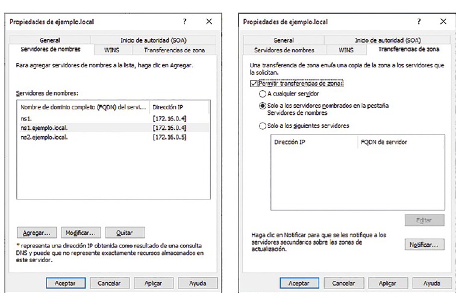
d) Configuración de delegación, reenvío y sugerencias raíz
Para independizar la gestión de un subdominio, se requiere la existencia de un servidor delegado. Para su configuración se deben seguir los mismos pasos descritos con anterioridad, pero con la información de dicho subdominio (tipo de zona «Zona principal», «Zona de búsqueda directa» y nombre «subdominio.ejemplo.local»). En la configuración TCP/IP deberá indicarse que los DNS serán él mismo y los DNS de la zona de nivel superior.
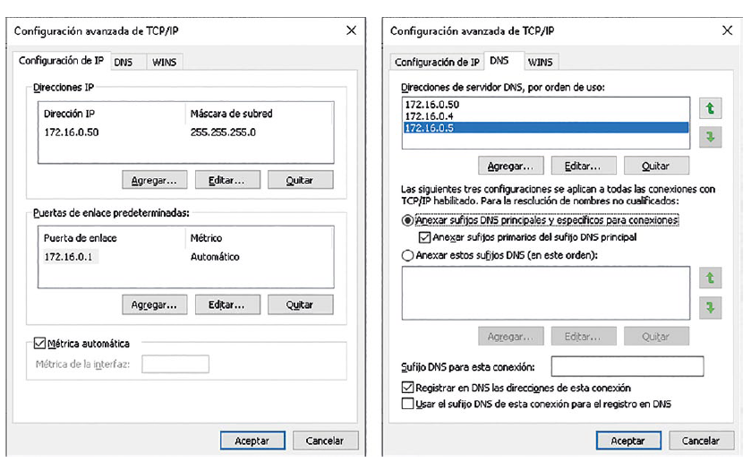
Una vez se ha configurado el servidor autoritativo para la zona delegada, se debe dejar constancia de ella en la zona gestionada por el servidor del dominio padre maestro de «ejemplo.local». Para ello se efectuarán estos pasos:
- Crear un registro A o AAAA que identifique al DNS autoritativo maestro de la zona de nivel inferior en la jerarquía. Se le dará como nombre «delegadosubdominio».
- Crear la delegación en el DNS padre maestro, haciendo clic derecho sobre la zona y seleccionando «Delegación nueva…». En el asistente se debe indicar que el dominio delegado es «subdominio» y que el equipo encargado de gestionarlo es el equipo que hará de servidor maestro de la delegación («delegadosubdominio.ejemplo.local» con la dirección IP «172.16.0.50»).
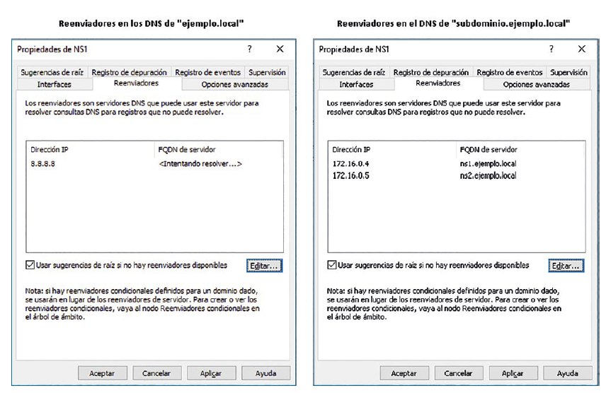
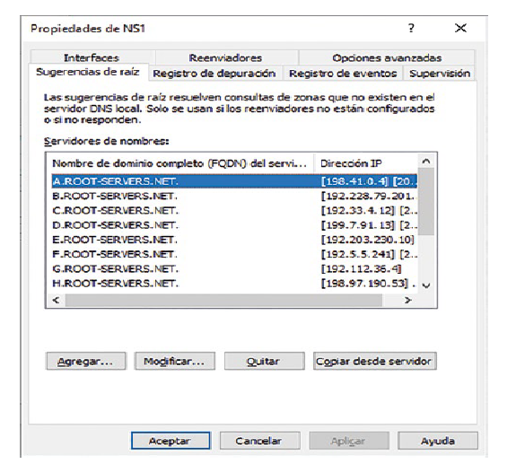
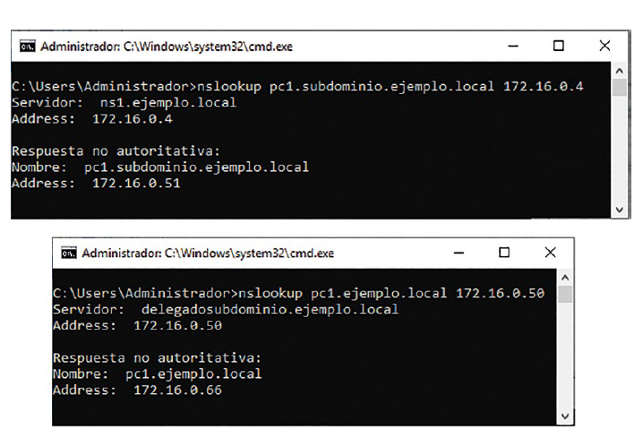
e) Arranque, parada y consulta de estado
La administración del servicio se puede hacer mediante los siguientes cmdlets:
[Start|Stop|Suspend|Resume|Restart|Get]-Service -name DNSTodas estas tareas también pueden llevarse a cabo desde el submenú «Todas las tareas» que aparece al hacer clic derecho sobre el servidor.
Asimismo, se podrán iniciar o pausar las zonas de forma independiente desde la pestaña «General» de las propiedades de cada zona.
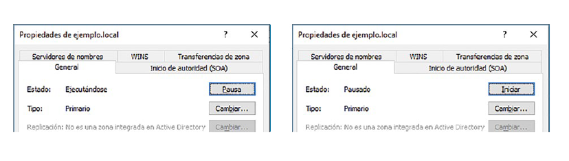
f) Monitorización
Una vez configurado el registro de eventos, estos se podrán visualizar accediendo a las siguientes
categorías del visor de eventos (eventvwr.msc):
- Registros de aplicaciones y servicios > Microsoft > Windows > DNS-Server > Auditoría.
- Vistas personalizadas > Roles de servidor > Servidor DNS.
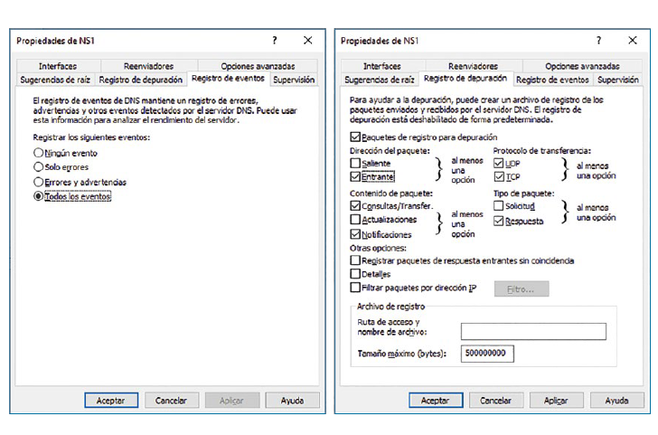
4.2. Implementación con Ubuntu Server (BIND 9)
a) Instalación
El servicio elegido para realizar la instalación sobre un sistema operativo Linux Ubuntu Server será BIND 9. Para llevar a cabo su instalación y la de las utilidades empleadas para su posterior diagnóstico, deberá ejecutarse:
sudo apt-get update -y
sudo apt-get install bind9 bind9utils -yb) Configuración
Como requisito previo, se debe configurar la interfaz de red del servidor, indicando que su «Servidor
DNS preferido» será él mismo. En caso de que se vaya a instalar un servidor secundario, se
establecerá como segundo DNS la dirección del otro servidor. A continuación, se muestra el fichero de
configuración netplan /etc/netplan/01-network-manager-all.yaml para los servidores maestro
y esclavo:
# Maestro
network:
version: 2
renderer: networkd
ethernets:
enp0s3:
addresses: [172.16.0.4/24]
gateway4: 172.16.0.1
nameservers:
search: [ejemplo.local]
addresses: [172.16.0.4, 172.16.0.5]# Esclavo
network:
version: 2
renderer: networkd
ethernets:
enp0s3:
addresses: [172.16.0.5/24]
gateway4: 172.16.0.1
nameservers:
search: [ejemplo.local]
addresses: [172.16.0.5, 172.16.0.4]Los ficheros de configuración del servicio se encuentran en el directorio /etc/bind:
db.emptyes un archivo plantilla para comenzar a crear una zona.named.confes el archivo principal de configuración, desde el que se incluye:named.conf.optionsel cual contiene opciones genéricas.named.conf.localque contendrá las especificaciones de las zonas que crear. Puede incluir el ficherozones.rfc1918para especificar las zonas de resolución inversa de todas las direcciones IP no enrutables y especificadas por RFC 1918.named.conf.default-zonesque incluye los ficheros con información sobre la zona raíz (db.root), local (db.local) y de resolución inversa (db.0,db.255ydb.127).
Antes de proceder con la configuración, se describen las características del contenido de los ficheros de declaración de zonas para BIND9:
- En la primera línea se suele declarar el TTL mediante la directiva
$TTL. Este se aplicará a todos los registros salvo que este se establezca de forma específica. - El nombre de la zona puede indicarse mediante un FQDN o con el carácter arroba «@», el cual referencia a
$ORIGIN. - Los registros especifican sus campos conforme a la sintaxis siguiente:
nombre_dominio TTL Clase SOA servidor email (sn ref ret ex nc) nombre_dominio TTL Clase NS servidor nombre_dominio TTL Clase MX Preference nombre servicio_protocolo.nombre_dominio TTL Clase SRV Priority Weight Port nombre nombre TTL Clase A ipv4 nombre TTL Clase AAAA ipv6 alias TTL Clase CNAME canonical nombre_dirección TTL Clase PTR nombre - La separación de los campos se realiza mediante espacios en blanco o tabulaciones.
- La ausencia de determinados campos a la hora de especificar los registros implica el mismo valor que el del registro precedente.
- Se pueden incluir comentarios:
- En ficheros named:
- Delimitados entre “/*” y “*/” (permiten comentarios multilínea).
- Precedidos por “//” o “#” (comentarios de una línea).
- En ficheros de declaración de zona precedidos por punto y coma “;”.
- En ficheros named:
- Los identificadores que no terminen con el carácter punto “.” se autocompletan con el nombre de la zona.
- Los tiempos pueden especificarse en segundos o seguidos de:
m(minutos),h(horas),d(días),w(semanas). Pueden combinarse (por ejemplo,1d12hes 1,5 días).
Por defecto, el servidor trabaja en modo recursivo escuchando a través de todas sus interfaces de red
en el puerto 53. Para modificar el modo de trabajo, será preciso establecer la directiva
recursion en la sección options del fichero de configuración global
named.conf.options. Asimismo, si se desea que el servicio únicamente se preste en
determinadas interfaces o puertos, deberá especificarse mediante las directivas listen-on
y listen-on-v6 en la misma sección.
Dado que realizar la configuración de zonas en ficheros de texto plano puede llevar a cometer errores, existen algunas herramientas destinadas a comprobar la sintaxis de los mismos:
named-checkconfcomprueba la sintaxis, que no la semántica, del ficheronamed.conf. Para hacer uso de ella, basta con ejecutar el comando sin parámetros.named-checkzonepermite comprobar si una zona se ha declarado correctamente en un fichero. Para hacer uso de ella se utiliza el comando siguiente:sudo named-checkzone ejemplo.local db.ejemplo.local
💡 Recurso web
En el servidor de ISC encontrarás una guía muy completa sobre la configuración de BIND9.
c) Configuración específica para servidor maestro
A continuación, se enumeran y describen los pasos necesarios para realizar una configuración equivalente a la realizada con Windows Server:
- Especificar las zonas de resolución directa e inversa editando el fichero de configuración
/etc/bind/named.conf.localen el servidor maestro:zone "ejemplo.local" { type master; file "/etc/bind/db.ejemplo.local"; }; zone "16.172.in-addr.arpa" { type master; file "/etc/bind/db.16.172"; }; - Declarar las zonas de resolución directa editando el fichero de configuración
/etc/bind/db.ejemplo.localen el servidor maestro:$TTL 3600 @ IN SOA ns1.ejemplo.local. tic.ejemplo.local. ( 2019070401 ; serial number 900 ; refresh 600 ; retry 86400 ; expire 3600 ; negative cache TTL ) IN NS ns1.ejemplo.local. IN MX 10 mailserver1.ejemplo.local. IN MX 10 mailserver2.ejemplo.local. _telnet._tcp IN SRV 0 0 23 pc1.ejemplo.local. ns1 IN A 172.16.0.4 mailserver1 IN A 172.16.0.6 mailserver2 IN A 172.16.0.7 www IN A 172.16.0.8 ftp IN A 172.16.0.9 pc1 IN A 172.16.0.66 recepción IN CNAME pc1.ejemplo.local. - Declarar la zona de resolución inversa editando el fichero de configuración
/etc/bind/db.16.172en el servidor maestro:$TTL 3600 @ IN SOA ns1.ejemplo.local. tic.ejemplo.local. ( 2019070401 ; serial number 900 ; refresh 600 ; retry 86400 ; expire 3600 ; negative cache TTL ) @ IN NS ns1.ejemplo.local. 4.0 IN PTR ns1.ejemplo.local. 5.0 IN PTR ns2.ejemplo.local. 6.0 IN PTR mailserver1.ejemplo.local. 7.0 IN PTR mailserver2.ejemplo.local. 8.0 IN PTR www.ejemplo.local. 9.0 IN PTR ftp.ejemplo.local. 50.0 IN PTR delegadosubdominio.ejemplo.local. 66.0 IN PTR pc1.ejemplo.local.
💡 Recurso web
En el caso de que estés empleando direcciones IPv6, en http://rdns6.com/hostRecord puedes encontrar un generador online de recursos PTR de direcciones IPv6 para BIND.
d) Configuración específica para servidor esclavo
Antes de proceder con las configuraciones sobre el servidor esclavo, se deben declarar en el maestro los dos registros A o AAAA correspondientes a los servidores maestro («ns1.ejemplo.local») y esclavo («ns2.ejemplo.local»), así como los registros NS asociados. Para ello, se editará el fichero de configuración /etc/bind/db.ejemplo.local en el servidor maestro:
...
@ IN NS ns2.ejemplo.local.
ns2 IN A 172.16.0.5A continuación, será preciso indicar que se permitirán transferencias de zona al servidor secundario, añadiendo la directiva allow-transfer a la especificación de la zona. También se puede incluir la directiva also-notify para forzar que los cambios se propaguen tan pronto como se produzcan. Estos cambios se realizarán sobre el fichero /etc/bind/named.conf.local del servidor maestro:
zone "ejemplo.local" {
...
allow-transfer {
172.16.0.5;
};
also-notify {
172.16.0.5;
};
};
...Una vez se ha configurado la zona en el servidor maestro para que permita transferencias de zona al servidor esclavo, se procede a la creación de la zona en este último indicando los servidores maestros y permitiendo notificaciones desde ellos. Todo ello, editando /etc/bind/named.conf.local en el servidor esclavo:
zone "ejemplo.local" {
type slave;
masters { 172.16.0.4; };
allow-notify { 172.16.0.4; };
};e) Configuración de delegación, reenvío y sugerencias raíz
Para independizar la gestión de un subdominio se requiere la existencia de un servidor delegado que declare la información de la zona de nivel inferior. De igual manera a como se indicó para Windows Server, en la configuración TCP/IP deberá establecerse que los DNS serán él mismo y los DNS de la zona de nivel superior. Para ello se debe editar el fichero de configuración netplan /etc/netplan/01-network-manager-all.yaml en el servidor delegado:
network:
version: 2
renderer: networkd
ethernets:
enp0s3:
addresses: [172.16.0.50/24]
gateway4: 172.16.0.1
nameservers:
search: [subdominio.ejemplo.local]
addresses: [172.16.0.50, 172.16.0.4, 172.16.0.5]La subzona se declarará de igual manera a como se hizo en el servidor de la zona padre (fichero de configuración /etc/bind/named.conf/local del servidor delegado):
zone "subdominio.ejemplo.local" {
type master;
file "/etc/bind/db.subdominio.ejemplo.local";
};Y fichero de configuración /etc/bind/db.subdominio.ejemplo.local del servidor delegado:
$TTL 3600
@ IN SOA ns1.subdominio.ejemplo.local. tic.ejemplo.local. (
2019070401 ; serial number
900 ; refresh
600 ; retry
86400 ; expire
3600 ; negative cache TTL
)
IN NS ns1.subdominio.ejemplo.local.
ns1 IN A 172.16.0.50
pc1 IN A 172.16.0.51Una vez configurado el servidor autoritativo para la subzona, esta se debe delegar sobre el servidor autorizado correspondiente. Para ello, en la zona gestionada por el servidor del dominio padre («ejemplo.local») se debe añadir un registro A o AAAA que identifique al DNS autorizado maestro de la zona de nivel inferior («delegadosubdominio.subdominio») y un registro NS para la subzona apuntando al anterior. Este cambio se llevará a cabo sobre el fichero /etc/bind/db.ejemplo.local del servidor maestro:
...
subdominio IN NS delegadosubdominio.subdominio.ejemplo.local.
delegadosubdominio.subdominio IN A 172.16.0.50
...No debe olvidarse configurar los reenviadores generales. En los DNS de «ejemplo.local» apuntarán a otro servidor de mayor nivel, como puede ser el de Google en la 8.8.8.8, y en los de «subdominio.ejemplo.local» apuntarán a los DNS de la zona padre. Dado que no se entrará en detalle en temas de seguridad y validación de zonas, procederemos a deshabilitar la validación de las mismas mediante el establecimiento al valor no de la sentencia dnssec-validation en los ficheros de configuración de opciones (/etc/bind/named.conf.options) de todos los DNS (maestro, esclavo y delegado):
// maestro y esclavo "ejemplo.local"
...
forwarders { 8.8.8.8; };
dnssec-validation no;
...
// delegado "subdominio.ejemplo.local"
...
forwarders { 172.16.0.4; 172.16.0.5; };
dnssec-validation no;
...El reenviador condicional a «externo.com» se crea especificando una zona de tipo forward que incluye una sección forwarders con las direcciones IP en las que se encuentra el dominio en los ficheros /etc/bind/named.conf.local de todos los servidores:
zone "externo.com" {
type forward;
forwarders { 83.44.227.152; };
};En el caso de que el reenvío falle, siempre existirá el recurso de las «Sugerencias de raíz». Su información reside físicamente sobre el fichero /etc/bind/db.root, el cual se referencia desde la zona «.» especificada en el fichero named.conf.default-zones.
f) Arranque, parada y consulta de estado
Para administrar el servidor, se puede hacer uso de systemctl, el cual permite enviar comandos de control al administrador del sistema. La sintaxis de uso para manejar este servicio es:
sudo systemctl [reload|restart|start|status|stop] bind9g) Monitorización
Por defecto, los registros de BIND9 se escriben en el registro general del sistema /var/log/syslog. Para que el servicio pueda utilizar su propio fichero de log, hay que seguir los siguientes pasos:
- Añadir la línea siguiente al fichero principal de configuración
/etc/bind/named.conf:include "/etc/bind/named.conf.log"; - Crear el fichero
/etc/bind/named.conf.log, que será el que describa cómo llevar a cabo el registro de log:logging { channel bind_log { file "/var/log/bind/bind.log" versions 3 size 5m; severity info; print-time yes; print-severity yes; print-category yes; }; category default { bind_log; }; category update { bind_log; }; }; - Crear el directorio en el que el servidor, con cuenta de usuario bind, registrará los eventos y convertirlo en propietario del directorio para que pueda escribir en él:
sudo mkdir /var/log/bind sudo chown bind:bind /var/log/bindTambién será necesario reemplazar las líneas siguientes en el fichero de configuración
/etc/apparmor.d/usr.sbin.named:/var/log/named/** rw, /var/log/named/ rw,por:
/var/log/bind/** rw, /var/log/bind/ rw, - Para evitar que el log crezca sin control, se usará
logrotate, una utilidad del sistema que gestiona la rotación automática y la compresión de los archivos de registro. Para ello se debe crear el fichero/etc/logrotate.d/bind:/var/log/bind/bind.log { daily missingok rotate 7 compress delaycompress notifempty create 644 bind bind postrotate /usr/sbin/invoke-rc.d bind9 reload > /dev/null endscript } - Por último, será necesario reiniciar los servicios afectados:
sudo systemctl restart apparmor.service sudo systemctl restart bind9.service
🔍 Investiga
Aunque el servicio BIND es el servidor DNS por excelencia en sistemas operativos UNIX/Linux, existen alternativas que permiten implementar escenarios similares con resultados muy satisfactorios. Busca información en Internet sobre DNSMASQ e implementa un escenario ejemplo con el que comprobar su funcionamiento.
5. Cliente DNS (resolver)
Los sistemas operativos con soporte para realizar conexiones por Internet disponen de un resolver que se encarga de realizar las consultas a los servidores DNS configurados cuando cualquier aplicación o servicio se lo requiere. Las llamadas desde estos servicios o aplicaciones (navegador, herramienta línea comandos, gestor de correo de escritorio…) se realizan de forma transparente para el usuario. Sin embargo, existen herramientas que se han diseñado específicamente para interrogar a un servidor DNS de forma explícita. Algunas de ellas están disponibles en modo consola, otras en modo gráfico, otras solo para sistemas UNIX/LINUX…
💡 Para saber más
- Mozilla y Google han implementado el protocolo DNS over HTTPS (DoH) definido en la IETF RFC 8484.
- Según esta versión de DNS, las solicitudes y respuestas se envían a través de una conexión HTTPS cifrada a nivel de aplicación, no de sistema operativo, en lugar de utilizar UDP como la versión tradicional de DNS. Así, aunque se configuren las DNS en el sistema operativo, al navegar utilizando Firefox realmente se estarán usando los de Mozilla o Google.
- Esto redunda en seguridad e integridad al no poderse interceptar el tráfico (DoH utiliza el puerto 443 al igual que otras conexiones HTTPS, por lo que es complejo distinguir el tráfico de ambos). Otro beneficio derivado del uso de este protocolo es la disminución del tiempo empleado en el proceso de consulta.
- Pero, a pesar de estas ventajas, el hecho de que ni siquiera el ISP pueda conocer las solicitudes realizadas a través del navegador ha suscitado grandes críticas por parte del Gobierno británico, operadores y otros organismos como la Internet Watch Foundation (IWF).
- Existe otra versión de DNS seguro que realiza el cifrado directamente sobre TLS conectando contra el puerto 853, lo cual aligera aún más la comunicación. Se la conoce como DNS over TLS (DoT) y está definida en la IETF RFC 7858. Aunque añade menos sobrecarga sobre las comunicaciones, desafortunadamente los principales proveedores de navegadores eligen implementar DoH.
🔍 Investiga
Busca información sobre cómo configurar el navegador Firefox para que use DoH y realiza su configuración en un equipo cliente.
5.1. nslookup
Se trata de una herramienta de consola que permite trabajar en modo interactivo (entrando en su propia consola) o en modo comando (obteniendo el resultado tras su ejecución). Esta herramienta está disponible tanto en sistemas Microsoft como en sistemas UNIX/LINUX, por lo que es altamente recomendable familiarizarse con ella. La sintaxis de uso para el modo no interactivo es la siguiente:
nslookup [-opción] [nombre de host] [servidor]Ejemplo de nslookup en Windows y Linux para una misma consulta:
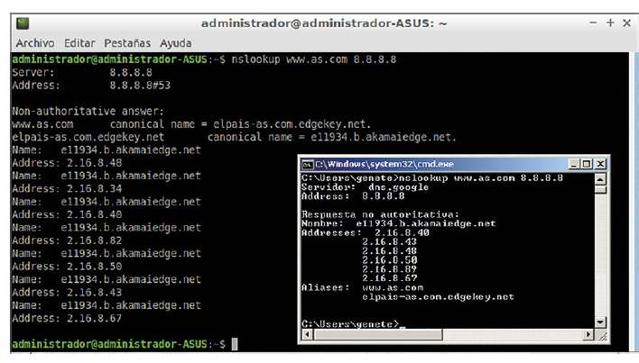
Para utilizar esta herramienta en modo interactivo, bastará con ejecutar el comando sin parámetros y, una vez dentro de su consola, se podrá interactuar con él directamente. En la siguiente imagen se puede ver un ejemplo de uso interactivo sobre sistemas Microsoft y Linux:
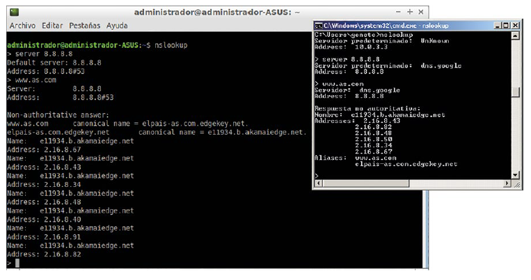
5.2. dig
Comando disponible en sistemas UNIX y LINUX que se emplea para hacer consultas desde el terminal o un fichero externo. Su sintaxis de utilización es la siguiente:
dig <@servidor> [opciones] [nombre] [tipo]
donde @servidor es el nombre o dirección IP del servidor al que se realizarán las
consultas, nombre es el nombre de dominio por el que se realiza la consulta y
tipo es el tipo del registro por el cual se consulta (ANY, NS, SOA, MX, A…). Estas son
las opciones más comunes:
-hmuestra la ayuda del comando.-xse emplea para hacer consultas inversas.-f <fichero>permite recibir las consultas desde un fichero de texto externo. El fichero debe tener una consulta por línea y con la misma sintaxis que en la línea de órdenes.-b <dirección>indica la dirección IP desde la cual se realizará la consulta (útil en caso de tener más de una interfaz de red configurada).
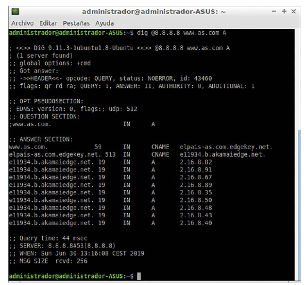
5.3. host
Otro comando disponible en sistemas UNIX/LINUX es host. Su sintaxis es:
host [-opciones] nombre_de_dominio/dirección_ip servidorLas principales opciones que se pueden emplear son:
-amuestra todos los registros DNS para el hostname dado.-Cmuestra los registros SOA y los servidores de nombres autorizados.-des equivalente a-v.-llista todos los hosts en un dominio usando AXFR.-tse utiliza para seleccionar el tipo de query (CNAME, PTR, MX…).-wespecifica cuánto esperar para una respuesta.-vgenera una salida mucho más detallada (similar a la del comando dig o nslookup).-Tutiliza TCP en vez de UDP para las consultas al servidor de nombres. Esta opción es implícita a querys que requieran TCP (las peticiones AXFR, por ejemplo).
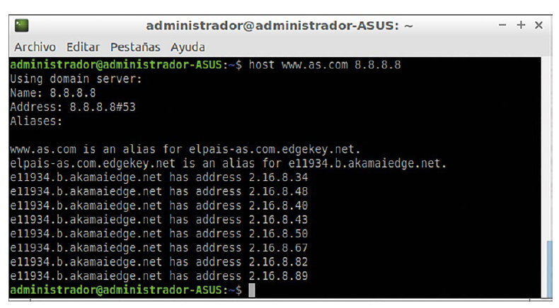
💡 Para saber más
Existen portales web que permiten interrogar a los diferentes servidores DNS y mostrar el resultado formateado para el análisis de los campos de la petición y la respuesta. Algunos ejemplos son https://centralops.net/co/, https://dnclient.net/, https://dnslookup.online/, https://www.dnsqueries.com/en/dns_lookup.php. Asimismo, el servidor DNS Simple DNS Plus incluye la herramienta DNS Look Up, que ha sido especialmente diseñada para interrogar a los servidores DNS de una forma fácil e intuitiva.
📝 Actividad propuesta 3.11
Utilizando las herramientas descritas en este apartado, interroga al servidor DNS de Google con IP 8.8.8.8 sobre los servidores de correo electrónico disponibles para el dominio hotmail.com.
6. Integración de servidores de nombres planos y jerárquicos
El servidor DNS de Microsoft puede apoyarse en servidores WINS para realizar búsquedas de nombres que no se encuentren en su espacio de nombres y así dar un servicio más completo. Para combinar ambos servicios deberá habilitar:
- La búsqueda directa desde la pestaña «WINS» de las propiedades de la zona de resolución directa, indicando la dirección IPv4 del servidor WINS.
- La búsqueda inversa desde la pestaña «WINS-R» de las propiedades de la zona de resolución inversa, indicando el dominio que anexar al nombre retornado.
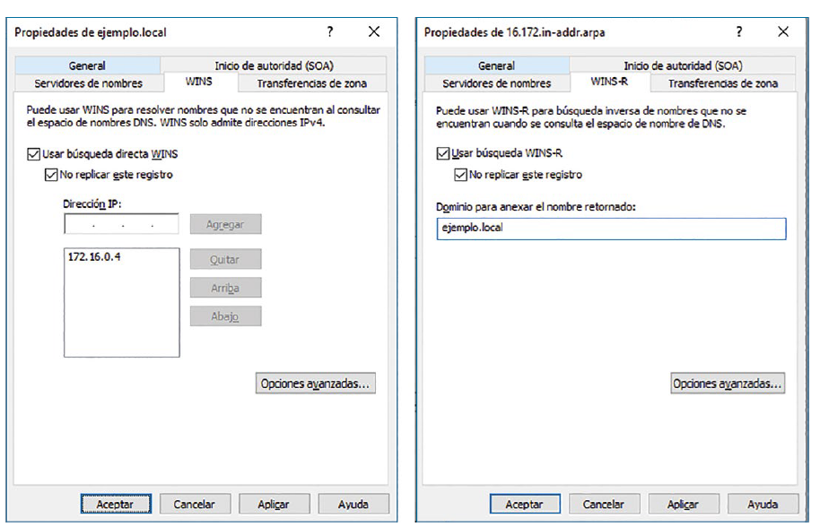
Las configuraciones previas crearán los registros WINS y WINS-R para las zonas de resolución directa e inversa respectivamente, que únicamente son reconocidos por servidores Microsoft. Por este motivo, si se desea poder transferir estas zonas a servidores esclavos implementados con otra tecnología (BIND9), deberá habilitarse el checkbox «No replicar este registro».
Resumen
- Los sistemas de nombres planos (NetBIOS, WINS) permiten identificar equipos sin conocer su estructura jerárquica, pero están cayendo en desuso frente a los sistemas jerárquicos.
- El sistema de nombres jerárquico por excelencia es DNS, que organiza el espacio de nombres en forma de árbol invertido y distribuido en zonas.
- Un servidor DNS puede actuar como maestro (gestiona directamente la zona), esclavo (obtiene la información del maestro por transferencia de zona) o caché (almacena respuestas de otras consultas).
- Las consultas DNS pueden ser recursivas (el servidor devuelve la respuesta final) o iterativas (el servidor devuelve la mejor referencia que conoce).
- Existen zonas de resolución directa (nombre → IP) e inversa (IP → nombre), y registros de diferentes tipos (SOA, NS, A, AAAA, CNAME, MX, SRV, PTR, TXT).
- Los mecanismos de delegación, reenvío y sugerencias de raíz permiten resolver consultas fuera de las zonas gestionadas directamente.
- DDNS permite actualizar automáticamente la información de un nombre de dominio en DNS, y DNSSEC añade seguridad mediante cifrado asimétrico.
- La implementación práctica se ha mostrado sobre Microsoft Windows Server (herramienta DNS) y Ubuntu Server (BIND 9).
- Existen herramientas cliente como nslookup, dig y host para interrogar a los servidores DNS.
- Los servidores DNS de Microsoft pueden integrarse con WINS para resolver nombres NetBIOS de forma transparente.
📝 Ejercicios propuestos
- ¿Es posible configurar en un cliente Windows más de dos servidores DNS?
- ¿Es lo mismo «servidor primario» que «servidor DNS preferido» o que «servidor maestro»? Justifica tu respuesta.
- ¿Es lo mismo «servidor secundario» que «servidor DNS alternativo» o que «servidor esclavo»? Justifica tu respuesta.
- Si se dispone de los tres registros SRV siguientes:
¿Qué servidores y en qué proporción serán elegidos por los clientes?_telnet_tcp SRV 10 40 23 equipo1.dominio.local. _telnet_tcp SRV 10 60 23 equipo2.dominio.local. _telnet_tcp SRV 20 0 23 equipo3.dominio.local. - ¿Es posible integrar servidores WINS con servidores DNS de tecnología diferente a la de Microsoft? Justifica tu respuesta.
- ¿Qué comandos emplearías para comprobar que el servidor DNS BIND9 está sintácticamente bien configurado si dispone de la zona de resolución directa «midominio.local» descrita en el fichero «/etc/bind/db.midominio.local»?
- Describe la diferencia existente entre transferencia de zona completa e incremental.
📝 Supuestos prácticos
- A partir de la dirección de red 192.168.200.0/24, haz un reparto de direcciones entre los equipos de la clase. Configura cada equipo con los parámetros TCP/IP que corresponda y, mediante el empleo de los ficheros Hosts, configura un servicio de traducción de nombres de equipo a direcciones IP distribuido que permita acceder a cada equipo del laboratorio mediante el nombre del alumno que lo utiliza. Comprueba la conectividad de los equipos con la herramienta ping. (Actividad en grupo).
-
Se desea mantener y gestionar un dominio para la empresa Kanado Corporation. Entre los requisitos que deben satisfacerse se encuentran:
- El nombre del dominio será «kanado.local».
- Existirá un servidor DNS primario con dirección IP 192.168.1.100.
- Existirán tres equipos identificados como pc1, pc2 y pc3 dentro del dominio, cuyas direcciones IP serán, respectivamente, 192.168.1.12, 192.168.1.22 y 192.168.1.32.
- pc1 también podrá identificarse como «secretario».
- Existirán tres servidores de correo electrónico. Sus nombres serán mail1, mail2 y mail3, y sus direcciones serán, respectivamente, 192.168.1.5, 192.168.1.6 y 192.168.1.7. Todos ellos atenderán con nombre mailserver dentro del dominio. Los servidores mail1 y mail2 deben tener la misma prioridad, que deberá ser mayor que la del servidor mail3.
- Además, será necesario dar soporte para el servicio ftp. Existirán tres servidores ftp con nombres ftp1, ftp2 y ftp3, cuyas direcciones serán respectivamente 192.168.1.8, 192.168.1.9 y 192.168.1.10.
- Para dar solidez a la infraestructura será necesario gestionar un servidor DNS esclavo que mantenga una copia de la información del primario. Su dirección IP será la 192.168.1.11.
- Las transferencias de zona entre el servidor primario y el secundario deberán realizarse cada tres horas. Por razones de seguridad, únicamente deberán permitirse transferencias de zona entre ambos servidores.
- Los tiempos de vida de cada registro deberán de ser de tres horas.
- Repite el escenario descrito en el supuesto práctico anterior utilizando ahora la tecnología servidor BIND sobre el sistema operativo Ubuntu Server.
-
Se desea mantener y gestionar un dominio formado por varios subdominios para una empresa con sedes en varios países de diferentes continentes. Las características del escenario que implementar son las siguientes:
- El conjunto de dominios está formado por un dominio de alto nivel denominado «local», tres dominios para los continentes «América», «Asia» y «Europa», y dos dominios por cada continente correspondientes a los países «Canadá», «EE. UU.», «China», «Japón», «España» y «Portugal».
- Por cada dominio/subdominio:
- Siempre existirá un servidor DNS maestro y uno esclavo con sendos nombres.
- Siempre existirá, al menos, un nombre que representará a un equipo con nombre «pc1».
- El rango de direcciones IP para utilizar será un rango privado de clase B en la subred 172.16.10.0/24, en donde los servidores tomarán las primeras direcciones IP y los clientes las que queden libres a continuación. Es decir, los servidores de «local» tomarán la 172.16.10.1/24 y 172.16.10.2/24, los de «america.local» la 172.16.10.3/24 y 172.16.10.4/24… el cliente «pc1.local» la 172.16.10.21/24, el cliente «pc1.america.local» la 172.16.10.22/24… y así sucesivamente.
- Todos los servidores DNS, ya sean maestros o esclavos, podrán resolver de forma autoritativa las consultas que a ellos lleguen acerca de registros que pertenecen a las zonas que manejan de forma directa. Por ejemplo, el servidor maestro de Asia podrá contestar de forma autoritativa a la consulta «¿IP para maestro.asia.local?» o «¿IP para pc1.asia.local?», pero para el resto de consultas deberá delegar o reenviar, respectivamente, sobre el servidor de nivel inmediatamente inferior o superior.
- Hacer el diseño que represente el dominio.
- Implementar el escenario entre todos los alumnos de la clase, de manera que se pueda conocer la dirección IP asignada a cada nombre y viceversa. Podrán combinarse todas las tecnologías descritas en el capítulo.
- Comprobar, desde un equipo cliente ajeno al entramado DNS implementado, pero con configuración de red compatible, que se puede interrogar a cualquier servidor del escenario acerca de cualquier nombre o IP y obtener el resultado correcto.
- Simula el proceso de transferencia de zona sobre uno de los servidores que hayas configurado mediante el empleo de alguna de las herramientas cliente descritas.
- La configuración DDNS de un router depende del modelo, por lo que no puede establecerse una guía genérica para su configuración. Accede a la página de configuración de tu router y busca la sección en la que puede configurarse para que haga uso de DDNS. A continuación, registra un FQDN en alguno de los portales soportados por tu router y asócialo a tu router para que actualice automáticamente tu IP pública con el FQDN elegido.
- El protocolo NetBIOS es considerado por algunas aplicaciones de detección de vulnerabilidades como un protocolo inseguro y potencialmente peligroso, por lo que es recomendable deshabilitarlo. Descarga e instala en tu equipo la aplicación NetBIOS Enumerator y realiza un barrido con ella en tu red local para conocer los nombres NetBIOS de los equipos de la red que tengan activado dicho protocolo. A continuación, accede a las propiedades de tus equipos Windows y procede a deshabilitar el protocolo.
Autoevaluación
1. ¿Qué puerto utiliza un servidor DNS para atender consultas?
- 53 TCP.
- 53 UDP.
- Todas las respuestas anteriores son incorrectas.
- Las respuestas a) y b) son correctas.
2. Los servidores DNS raíz:
- Son tres identificados como a.root-servers.net., b.root-servers.net. y m.root-servers.net.
- Son diez identificados como a.root-servers.net., b.root-servers.net.... y j.root-servers.net.
- Son trece identificados como a.root-servers.net., b.root-servers.net.... y m.root-servers.net.
- Todas las respuestas anteriores son incorrectas.
3. ¿Cuál de las herramientas siguientes viene preinstalada en sistemas Microsoft Windows?
- nslookup.
- dig.
- host.
- Todas las herramientas están disponibles de forma nativa en sistemas Microsoft Windows.
4. Selecciona entre los siguientes aquel que no se trate de un campo válido para un registro:
- TTL (Time To Live).
- Clase.
- SOA.
- Datos.
5. Identifica la afirmación falsa:
- El servicio WINS es un servicio de resolución y registro de nombres de equipos NetBIOS a direcciones IP.
- La dirección IP 19.8.133.55 se corresponderá con el registro puntero de la base de datos inversa con el nombre de dominio 19.8.133.55.in-addr.arpa.
- Los sistemas de nombres planos no ofrecen información relativa a la estructura jerárquica de la red en la que se encuentran los dispositivos.
- Una zona es como una base de datos completa para un subárbol podado del espacio de dominios.
6. ¿Cuál de los siguientes dominios no sería adecuado para una entidad bancaria que pretende ganarse la confianza de sus clientes?
- .es.
- .tk.
- Las respuestas a) y b) son correctas.
- Ninguna de las respuestas anteriores es correcta.
7. ¿Cuál de los siguientes registros es obligatorio introducir en un fichero de zona de resolución directa del servidor secundario correspondiente?
- SOA.
- NS.
- Las respuestas a) y b) son verdaderas.
- Todas las respuestas son incorrectas.
8. ¿En qué ruta puede encontrarse el fichero hosts dentro de un sistema operativo Windows?
- C:\Windows\System32\drivers\etc\hosts.
- C:\Windows\System\drivers\etc\hosts.
- C:\Windows\System32\etc\drivers\hosts.
- C:\Windows\System\etc\drivers\hosts.
9. ¿Cuál de los siguientes comandos se emplea para consultar la caché DNS en un sistema Windows?
- ipconf -displaydns.
- ifconfig -displaydns.
- ipconfig -displaydns.
- ifconfiguration -displaydns.
10. ¿A cuál de los siguientes tipos de dominio pertenece el dominio .edu?
- Se trata de un dominio de infraestructura.
- Se trata de un dominio gTLD patrocinado.
- Se trata de un dominio gTLD restringido.
- Se trata de un dominio geográfico (ccTLD).
Fuente: Dorrego Martín, M. Servicios en Red. Editorial Síntesis.
Bibliografía
Dorrego Martín, M. Servicios en Red. Editorial Síntesis. Capítulo 3: Servicios de resolución de nombres (págs. 63-106).